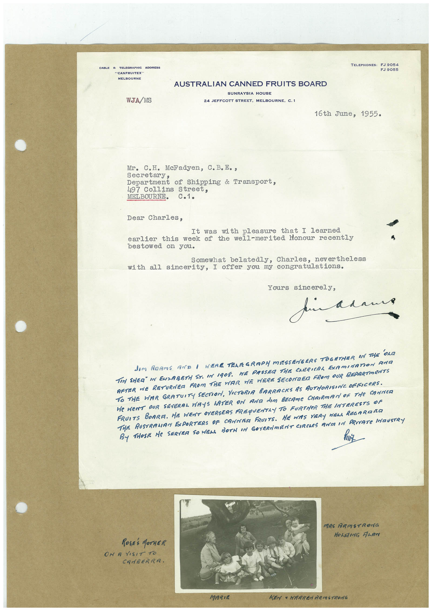

Book 1 · scan 120


Description
Transcription
Context
Review notes
Compare the machine draft with the scan. Handwriting and names need human review.
Artifacts
Edit the artifacts field in this note’s frontmatter to change these records. This summary is generated.
B01-S120-A01 — Letter, Photo & Handwritten note — Book 1, scan 120
Types: Typed document, Letter, Photo, Handwritten note
Scope: Whole scanned page; individual items can be split out during review.
Caption: Not mapped yet.
Caption source: Not recorded yet.
Caption status: unmapped
Machine transcription
TELEPHONES: CABLE & TELEGRAPHIC ADDRESS "CANFRUITEX" MELBOURNE FJ 9055 WJA/MS AUSTRALIAN CANNED FRUITS BOARD SUNRAYSIA HOUSE 24 JEFFCOTT STREET, MELBOURNE, C.1 16th June, 1955. Mr. C.H. MeFadyen, C. B.E., secretary Department of Shipping & Transport, 497 Collins Street, MELBOURNE. c.1. Dear Charles, It was with pleasure that I learned earlier this week of the well-merited Honour recently bestowed on you. Somewhat belatedly, Charles, nevertheless with all sincerity, I offer you my congratulations. Yours sincerely, pin adam dom ARAmS AND I WERE TELEGRAPH MISSENGERS TOGETHER IN THE OLD TEN SHER" IN ENZABETH ST. IN 1908. WE PASSER THE CHERICAL EXAMINATION AND AFTER ME RETURNER FROM THE WAR WE WERE SECONDER FROM OUR RRPARTMENTS TO THE WAR GRATUITY SECTION, VICTORIA BARRACKS AS AUTHORISING OFFICERS. HE WENT OUR SEVERAL WAYS LATER ON AND dIM BECAMe CHAIRMAN OF THe CANNER FRUITS BOARA. HE WENT OVERSEAS FREQUENTLY TO FURTHER THE INTERESTS OF TiE RUSTRAMAN EXPORTERS OF CANNAM FRUITS. HE WAS VERY NELL REGARAñO By THOSE He SERVEA SO WELL BOTH IN GOYERNmENT CIRCLeS ROTA IN PRIVATe INDUSTRY MRS ARMSTRONG ROSES MOTHER ON A VISIT TO CANBERRA. MARIE KENY " HARREN ARMSTRONG